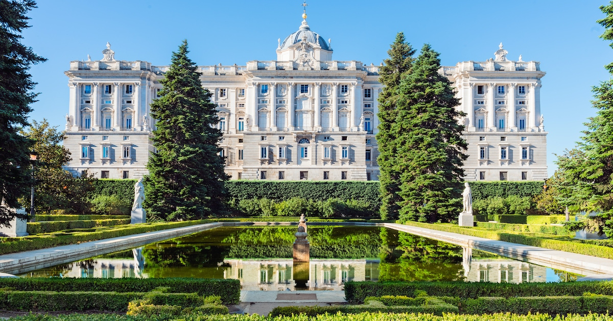
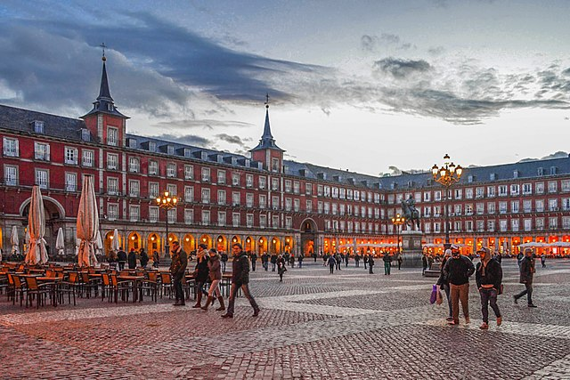
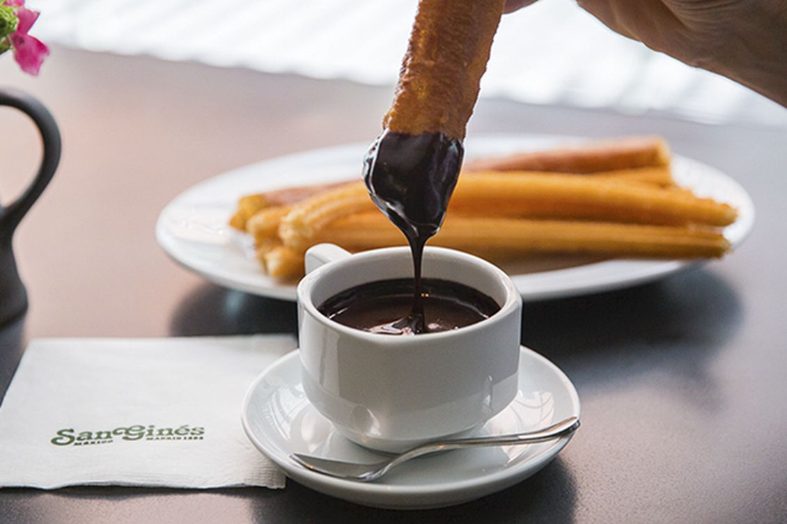
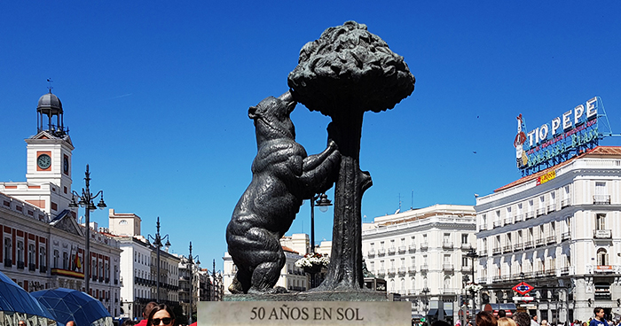
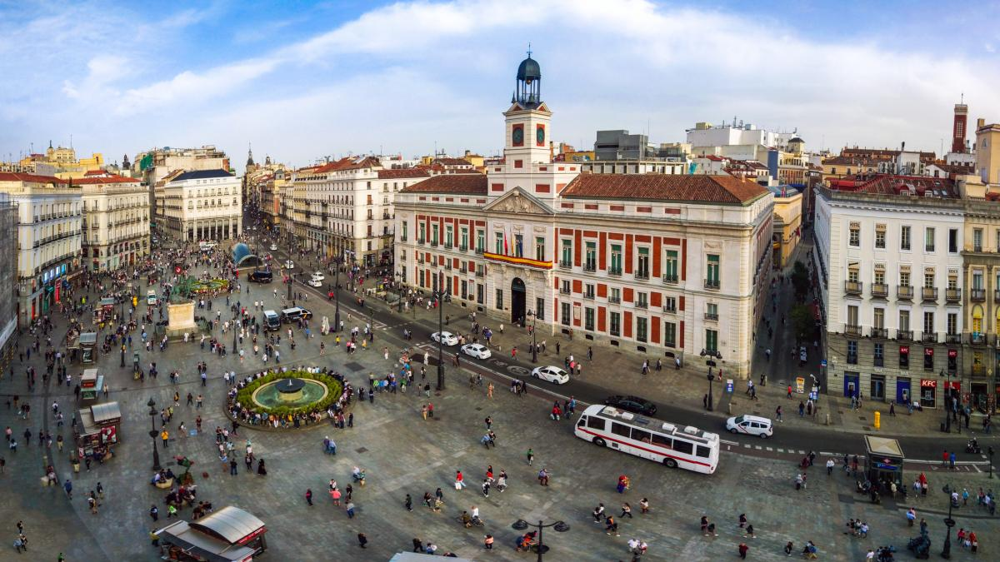
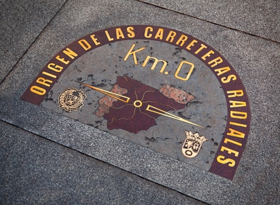
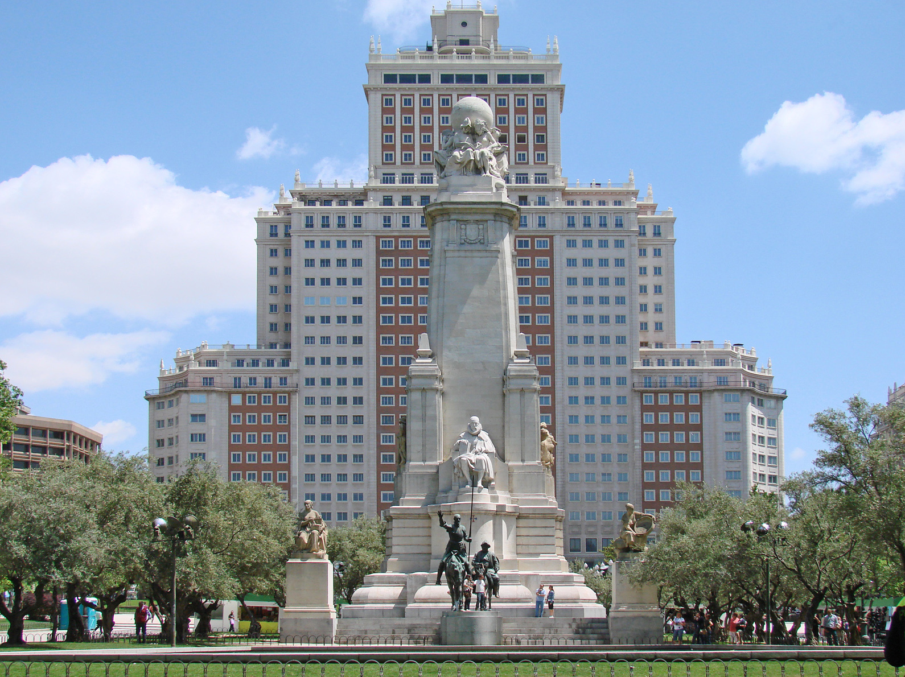

Tag 1: Das Stadtzentrum
Am erten Tag geht es darum die Stadt kennenzulernen. Dafür geht es als erstes in das Stadtzentrum!
Das Königshaus
Wir fangen den Tag mit dem Königshaus an. Es ist Europas grösster Palast, in ihm befinden sich Werke von Goya und Velázquez und es enthält das weltweit einzige Stradivarius-Streichquintett. Man kann entscheiden ob man durch die Gärten vor dem Palast spaziert und sich das Äussere anguckt oder eine Tour im Inneren macht.
Die Plaza Mayor
Madrids Hauptplatz ist die Plaza Mayor. Einer der Hauptakteure der Plaza Mayor befindet sich genau in der Mitte des Platzes - Philip III. Er und sein Vater (Philipp II.) Sind diejenigen, die sich für den Platz bedanken, dessen Wurzeln bis ins 16. Jahrhundert zurückreichen. Hier gibt es auch Terrassen und kleine Läden. Wenn man im Dezember kommt, befindet sich der berühmteste Weihnachtsmarkt der Stadt hier.
Churros time!
Wenn man jetzt schon Hunger hat, sollte man auf die legendären Churros con chocolate nicht verzichten! Die besten Churros in Madird gibt es in der Chocolatería San Ginés. Die Churros taucht man in heisser Schokolade, damit sie richtig lecker sind!
El Oso y el Madroño
Diese Statue ist nicht weit von dem Churro-Boxenstopp entfernt. Der Bär, der Obst aus der Meerkirsche pflückt, ist seit 1960 in der Stadt und ist ihr Symbol.
La Puerta del Sol
Auf diesem Platz befindet sich das Rathaus der Comunidad de Madrid (was ungefähr einem Bundesland entspricht). Hier läutet die Glocke des Rauthauses 12 Mal für Silvester während man die 12 Trauben isst. Ausserdem ist das der Kilometer Null fur alle spanischen Strassen. Auf diesem Platz gibt es auch viele Läden und sie können ein schnelles Mittagessen machen. Auf dem Platz oder in den naheliegenden Strassen kann man auf den Terrasen oder in den Bars sich einer der Klassiker "Bocata de calamares" (Tintenfischbrot) oder ein "Bocata de jamón" (Schinkenbrot) gönnen. Um ein Schinkenbrot zu essen, geht man am bestem zum Museo del Jamón (Schinkenmuseum).


Shoppen gehen
Durch die naheliegenden Strassen der Puerta del Sol kann man zur Gran Vía gelangen. Hier gibt es viele Einkaufsmöglichkeiten:
- In Fuencarral kann man Second-Hand und Vintage Shopping betreiben.
- Auf der Gran Vía befindet sich der grösste Primark Spaniens: es ist fünf Stöcke hoch!
- Es gibt auch kleinere Läden wo man Schmuck oder Schuhe kaufen kann.
Plaza España
Wenn man die Einkäufe gemacht hat, kann man durch die Gran Vía zur Plaza de España kommen. Während des Spaziergangs läuft man an den Music-Theaters Madrids vorbei. Auf diesem Platz kann man sich ausruhen und für eine Weile auf dem Gras und im Schatten sitzen. Hier befindet sich das Denkmal an Cervantes (Autor des "Don Quijote de la Mancha"), seine Hauptfiguren Don Quijote und Sancho Panza, die Torre de Madrid und der Edificio España (Sitz des Hotel Riu). Der achtgrösste Wolkenkratzer der Stadt. Auf der Terrasse des Hotels hat man eine unglaubliche Aussicht über die Stadt.
Ende des Tages
Jetzt kann man beschliessen ob man noch im Stadtzentrum was zu Abend isst, (hier kannst du eine Liste der besten Restaurants in Madrid finden) oder man dem Tag ein Ende setzt. Die Plaza España ist deshalb ein gutes Ende da man direkt die Linien 2, 3 oder 10 der Metro nehmen kann um nach Hause zu gehen.